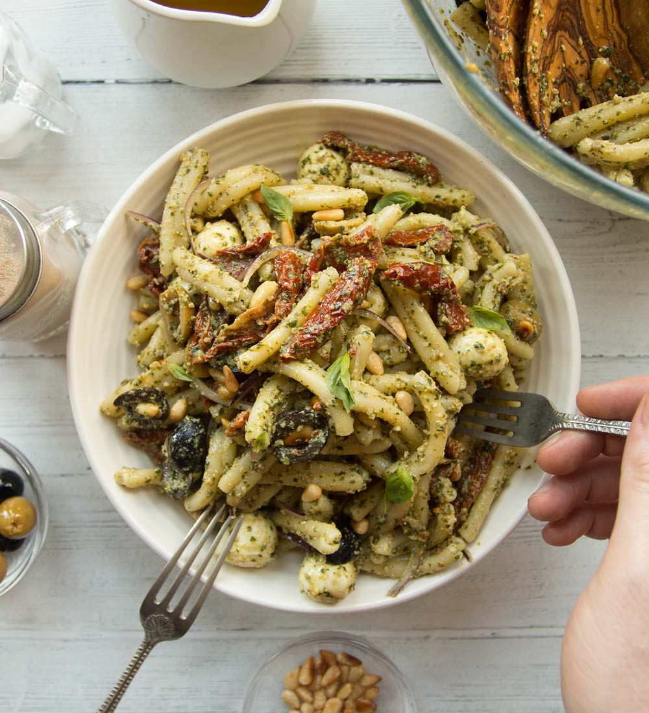

Perfect Pesto Pasta Salad

This simple pasta salad comes together in 30 minutes and will satisfy all those summer cravings!
Ingredients
- 8 oz. pasta (I prefer rotini or a farfalle)
- 4 oz. sun dried tomatoes in oil
- 1 cup basil peseto
- 1/2 cup mozzarella balls
Instructions
- Bring a large pot of salted water to boil. Cook the pasta until al dente, according to the instructions on box.
- While the pasta is cooking, cut up sun dried tomatoes to your preference. Cut mozzarella balls in to quarters.
- Once pasta is done cooking, drain it. Don't forget to reserve 1/2 cup of pasta water.
- Add pesto to the pasta. Add reserved pasta water until the sauce is loose enough for your liking.
- Add in chopped sun dried tomatoes and mozzarella balls.
- Enjoy!